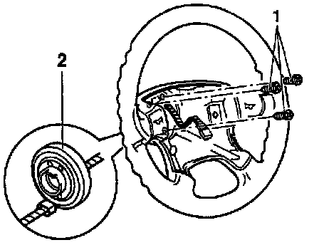

Clockspring Assembly / Spiral Cable: Service and Repair
Airbag Spiral Spring:

^ Separate single connector for horn from Airbag Spiral Spring (F138).
^ Remove Phillips-head screws -1- and remove Airbag Spiral Spring (F138) -2- from steering wheel.
^ Install in reverse order of removal.
NOTE:
Drivers side airbag unit and steering wheel must be removed.
The steering must be in the center position (wheels straight ahead) when the Airbag Spiral Spring (F138) is removed and installed.
Replacement Airbag Spiral Spring (F138) is secured in the center position with a cable tie.